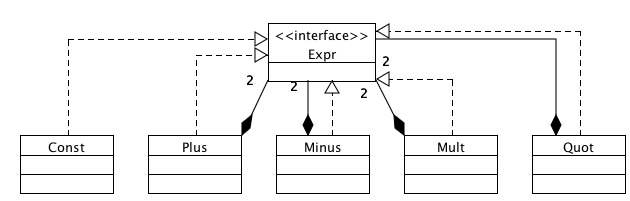

In this material, we will explore, via an example, the Composite pattern. Let us say that we are aiming to work with arithmetic expressions built out of +,-, *, / and constants. Thus, the expressions that we are interested in are described by the BNF grammar:
| e | ::= | c | (constant) |
| | | e1+e2 | (addition) | |
| | | e1-e2 | (minus) | |
| | | e1*e2 | (multiplication) | |
| | | e1/e2 | (quotient) |
The operations that we desire are as follows:
We begin by defining an interface that captures the desired functionality:
public interface Expr {
void preorder();
void postorder();
int evaluate();
}
Now, for each constructor of arithmetic expressions that we are interested in, we have a subclass that implements this interface. The basic idea is to use dynamic binding as a replacement for conditionals that perform switching based on the kind of expression. Thus, we are looking at a picture of the kind:

Let us begin by only looking at the constructors of the subclasses. The constructors reflect the arity of the arithmetic operators. Thus, we have:
Const(int i) Plus(Expr lt, Expr rt) Minus(Expr lt, Expr rt) Mult(Expr lt, Expr rt) Quot(Expr lt, Expr rt)
Note how the constructors as well as the class diagram show that
certain kinds of expressions (all except Const) are
composed from subexpressions. Hence the name Composite Pattern.
Even before we write the code that implements these subclasses, the form of the constructors allows us to explore thre representation of expressions that we have achieved.
1 new Const(1) 1+2 new Plus(new Const(1), new Const(2)) 3*4 new Mult(new Const(3), new Const(4)) (1+2)-(3*4) new Minus(new Plus(new Const(1), new Const(2)), new Mult(new Const(3), new Const(4))) ((1+2)-(3*4))/5 new Quot(new Minus(new Plus(new Const(1), new Const(2)), new Mult(new Const(3), new Const(4))), new Const(5)
What we are doing is write down the prefix form of the expression tree. The key is that all the above expressions are of type Expr, enabling the following code to typecheck.
Expr one = new Const(1);
Expr onePtwo = new Plus(new Const(1), new Const(2));
Expr threeMfour = new Mult(new Const(3), new Const(4));
Expr m = new Minus(onePtwo, threeMfour);
Expr n = new Quot(m,new Const(5));
Before we proceed further, let us consider each of the subclasses in turn.
class Const implements Expr {
private int v;
public Const(int w) { v = w;}
public int evaluate() { return v; }
public void preorder() { System.out.println("CONST" + v); }
public void postorder() { System.out.println("CONST" + v); }
}
class Plus implements Expr {
Expr lt, rt;
public Plus(Expr l, Expr r) { lt = l; rt =r ; }
public int evaluate() { return lt.evaluate() + rt.evaluate();}
public void preorder() {
System.out.println("PLUS");
lt.preorder();
rt.preorder();
}
public void postorder() {
lt.postorder();
rt.postorder();
System.out.println("PLUS");
}
}
class Minus implements Expr {
Expr lt, rt;
public Minus(Expr l, Expr r) { lt = l; rt =r ; }
public int evaluate() { return lt.evaluate() - rt.evaluate(); }
public void preorder() {
System.out.println("MINUS");
lt.preorder();
rt.preorder();
}
public void postorder() {
lt.postorder();
rt.postorder();
System.out.println("MINUS");
}
}
class Mult implements Expr {
Expr lt, rt;
public Mult(Expr l, Expr r) { lt = l; rt =r ; }
public int evaluate() { return lt.evaluate() *rt.evaluate();}
public void preorder() {
System.out.println("MULT");
lt.preorder();
rt.preorder();
}
public void postorder() {
lt.postorder();
rt.postorder();
System.out.println("MULT");
}
}
class Quot implements Expr {
Expr lt, rt;
public Quot(Expr l, Expr r) { lt = l; rt =r ; }
public int evaluate() { return lt.evaluate() / rt.evaluate();}
public void preorder() {
System.out.println("QUOT");
lt.preorder();
rt.preorder();
}
public void postorder() {
lt.postorder();
rt.postorder();
System.out.println("QUOT");
}
}
The striking feature of the above code is the total absence of conditionals. Indeed, a main theme of the lectures will be "Inheritance is a succinct way to express conditionals". To make this discussion concrete, considera typical recursive evaluation function that would be written in a standard imperative language, where we have a record type called Node, with a Type function that yields the type of node. The evaluation makes a case-switch based on the type.
public int evaluate(Node n) {
int r;
if (Type(Node) == CONSTANT) {
r = n.contents();
} else if (Type(Node) == PLUS) {
r = evaluate(n.left) + evaluate(n.right);
}
...
}
In our presentation, the effect of the conditional is achieved by dynamic dispatch. For example, consider the following code.
Expr one = new Const(1);
Expr onePtwo = new Plus(new Const(1), new Const(2));
Expr threeMfour = new Mult(new Const(3), new Const(4));
Expr m = new Minus(onePtwo, threeMfour);
Expr n = new Quot(m,new Const(5));
System.out.println(n.evaluate());
We will trace the execution a little to see the way in which dynamic dispatch works.